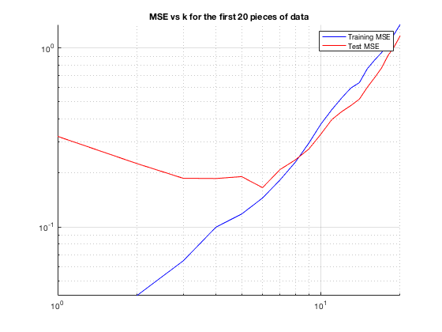
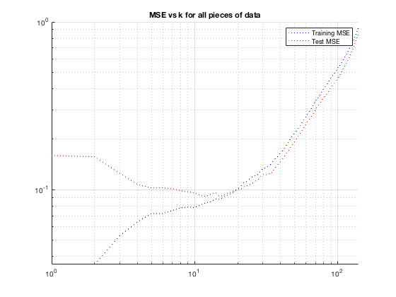
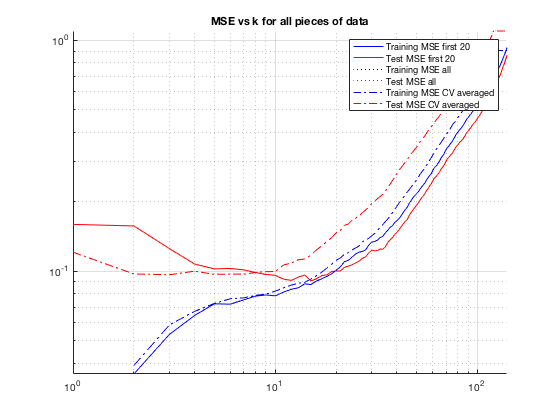

Contents
Set up Data
clear close all mTrain=load('data/mTrainData.txt'); mTest = load('data/mTestData.txt'); Xte=mTest(:,1); Yte=mTest (:,2); Xtr=mTrain(:,1); Ytr=mTrain (:,2);
a)
train_data_x = Xtr(1:20); train_data_y = Ytr(1:20); test_data_x = Xte(1:20); test_data_y = Yte(1:20); mseTrain = zeros(1, length(train_data_x)); mseTest = zeros(1, length(train_data_x)); for k = 1:length(train_data_x) learner = knnRegress(k,train_data_x, train_data_y); % train mseTrain(k) = mse(learner,train_data_x, train_data_y); % train loss mseTest(k) = mse(learner, test_data_x, test_data_y); % test loss end figure; hold on; P1 = loglog(1:length(train_data_x), mseTrain, 'b-'); P2 = loglog(1:length(train_data_x), mseTest, 'r-'); legend([P1, P2], 'Training MSE', 'Test MSE'); title('MSE vs k for the first 20 pieces of data'); grid on; set(gca, 'XScale', 'log', 'YScale', 'log');
The figure shows that the training MSE and the test MSE attempt to converge over time
b)
train_data_x = Xtr; train_data_y = Ytr; test_data_x = Xte; test_data_y = Yte; mseTrain = zeros(1, length(train_data_x)); mseTest = zeros(1, length(train_data_x)); for k = 1:length(train_data_x) learner = knnRegress(k,train_data_x, train_data_y); % train mseTrain(k) = mse(learner,train_data_x, train_data_y); % train loss mseTest(k) = mse(learner, test_data_x, test_data_y); % test loss end figure; hold on; P3 = loglog(1:length(train_data_x), mseTrain, 'b:'); P4 = loglog(1:length(train_data_x), mseTest, 'r:'); legend([P3, P4], 'Training MSE', 'Test MSE'); title('MSE vs k for all pieces of data'); grid on; set(gca, 'XScale', 'log', 'YScale', 'log');
The MSE for both test and training data smooth out over time
c)
train_data_x = Xtr; train_data_y = Ytr; mseTrain3 = zeros(length(train_data_x), 4); mseTest3 = zeros(length(train_data_x), 4); for k = 1:length(train_data_x) % 140 is number of train data, you might % you might need to change it. for cv = 1:4 % cross validation iTest = (1+20*(cv-1)):(20+20*(cv-1)); % choose 20 indices for testing iTrain = setdiff(1:140, iTest); % rest for testing learner = knnRegress(k,Xtr(iTrain),Ytr(iTrain)); % train on X(iTrain ,:) mseTrain3(k, cv) = mse(learner,Xtr(iTrain),Ytr(iTrain)); % train loss mseTest3(k, cv) = mse(learner,Xtr(iTest), Ytr(iTest)); % test loss end end mseTrain3Ave = mean(mseTrain3, 2); mseTest3Ave = mean(mseTest3, 2); figure; hold on; P1 = loglog(1:length(train_data_x), mseTrain, 'b-'); P2 = loglog(1:length(train_data_x), mseTest, 'r-'); P3 = loglog(1:length(train_data_x), mseTrain, 'b:'); P4 = loglog(1:length(train_data_x), mseTest, 'r:'); P5 = loglog(1:length(train_data_x), mseTrain3Ave, 'b-.'); P6 = loglog(1:length(train_data_x), mseTest3Ave, 'r-.'); legend([P1, P2, P3, P4, P5, P6], 'Training MSE first 20', 'Test MSE first 20', 'Training MSE all', 'Test MSE all', 'Training MSE CV averaged', 'Test MSE CV averaged'); title('MSE vs k for all pieces of data'); grid on; set(gca, 'XScale', 'log', 'YScale', 'log');
This technique might be used to ensure the best results
